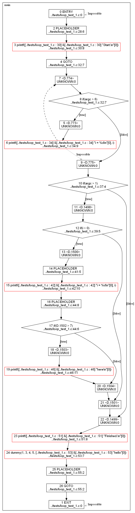

CoFlo @THIS_VERSION@ User's Manual
Copyright © 2011, 2012 Gary R. Van Sickle
Permission is granted to copy, distribute and/or modify this
document
under the terms of the GNU Free Documentation License, Version 1.3
or
any later version published by the Free Software Foundation; with no
Invariant Sections, no Front-Cover Texts and no Back-Cover Texts. A
copy of the license is included in the section entitled "GNU
Free Documentation License".
Table of Contents
About CoFlo
CoFlo is a Free and Open
Source
source code analysis tool which generates and analyzes control flow
graphs from C and C++ source. CoFlo is distributed under the
terms of the GNU General Public License Version 3.
The CoFlo home page is graciously hosted by SourceForge at the
following URL: http://coflo.sourceforge.net/.
Audience
CoFlo's ultimate target audience is all developers in need of a
deeper
inspection, analysis, and understanding of their C and C++ source
code. As of this alpha release however, CoFlo's target
audience
is early adopters who fit the prior description: Version
@THIS_VERSION@
of CoFlo, while usable and arguably even useful, is very much in its
early stages of development. Expect CoFlo's abilities to
improve
dramatically over the next several releases.
Supported
Platforms
CoFlo should build and run on any POSIX platform which supports its
few
prerequisites listed below. CoFlo @THIS_VERSION@ has been
tested
and is known to function on the following platforms:
- Cygwin (latest DLL version as of this writing,
"CYGWIN_NT-6.1-WOW64 1.7.10s(0.259/5/3) 20120111 22:39:26")
- Both x86 and x86_64 variants of the following Linux
distributions:
- Fedora 15
- Fedora 16
- Mandriva 2011
- openSUSE 11.3
- openSUSE 11.4
- openSUSE 12.1
- Ubuntu 11.10
- xUbuntu 11.04
- xUbuntu 11.10
Obtaining CoFlo
The CoFlo @THIS_VERSION@
source
distribution is available from http://sourceforge.net/projects/coflo/files/.
Precompiled
binaries are not available at this time.
Installing CoFlo
The CoFlo distribution is
fully
Autoconfiscated and installs easily. There are few
prerequisites,
listed below, all of which also are easy to install.
Prerequisites
Build
Prerequisites
Required
- A POSIX environment
CoFlo currently only builds on POSIX platforms. Primary
development is done on Cygwin, but distributions are tested on
Ubuntu,
Fedora, and openSUSE as well.
- The source distribution of the DParser parser
generator,
version 1.26.
CoFlo uses DParser for some of its source parsing needs.
The
CoFlo build process builds what it requires from the source
distribution.
- The source distribution of the Boost
C++ libraries, version 1.48.0.
CoFlo makes extensive use of the Boost libraries, in particular:
The CoFlo build process builds what it requires from the Boost
source
distribution.
Recommended
- Graphviz 2.26.3 or
later.
While not required for the build itself, CoFlo's configure
script
checks for dot at configure-time and will use the dot it finds
as the
default when generating graphical control flow graphs.
Optional
- If you wish to generate Doxygen documentation of the source
code,
you must have Doxygen
and the Graphviz dot
program
installed.
Runtime
Prerequisites
Required
- GCC 4.5.0 or later.
Currently, CoFlo uses GCC for both preprocessing and
decomposition of
the input program into three-address code. Versions
earlier than
4.5.0 do not provide access to the latter feature.
Recommended
- Graphviz 2.26.3 or later
The Graphviz dot program
is
required if you wish to generate graphical control flow graphs.
Installation
Download the
DParser
1.26 source distribution
Download the DParser 1.26 source distribution tarball (.tar.gz
format) from here
and place the file somewhere outside the CoFlo source tree. Do
not untar it: the CoFlo build process will build and install the
necessary static library and the "make_dparser" program under its
own
source tree.
Download the Boost
C++ Libraries 1.48.0 source distribution
Download the Boost C++ Libraries version 1.48.0 source distribution
(.tar.bz2 format) from here.
and place the file somewhere outside the CoFlo source tree. Do
not untar it: the CoFlo build process will build and install the
necessary libraries under its own source tree and link to them
statically.
If Pre-Built Boost
Libraries Are Available for, or Installed on, your Platform
Linking with system installations of Boost is not supported at
this time. CoFlo requires at least Boost version 1.47.0, which
as
of this writing is not commonly found in most platforms' pre-built
software repositories. Boost can be difficult to install
correctly as system-wide shared
objects/DLLs, and can also be difficult for programs to locate and
link
against, especially if multiple versions are installed. For
those
reasons, CoFlo builds its own local copy of the Boost libraries it
needs and links against them statically. This will not
interfere
with or disturb any system installations of Boost.
Optional: Install
Graphviz
It's probable that your platform has a Graphviz package available
via
its standard package distribution methods. While Cygwin does
not
have a "Cygwin native" Graphviz available, the Windows-native
version
works well with CoFlo. Download its installer from the Graphviz site here .
Download and install one of these pre-compiled binaries if
possible. If not possible, follow the instructions on the
Graphviz site on how to download, build, and install Graphviz from
source.
Configure, Build,
and
Install CoFlo
Once the above prerequisite tarballs have been downloaded, CoFlo
should
build and install without any problems. Make sure you specify
the
absolute paths to the Boost and DParser source distributions when
you
invoke configure, like so:
./configure --with-boost-tarball=/absolute/path/to/boost_1_48_0.tar.bz2 --with-dparser-tarball=/absolute/path/to/d-1.26-src.tar.gz
make
make install
The CoFlo package has a small test suite. After the "make" and
before the "make install", it would be prudent to run this test
suite
with a "make check". There should be no unexpected failures
reported by the test suite (there will however be a few expected
failures).
Please note that a checkout of the source from Subversion will not
build as easily, since the Autoconf/Automake-generated scripts are
not
maintained in the source repository. Please use the
distribution
tarballs.
Using CoFlo
Quick
Start
CoFlo ships with a few simple test files which you can use to get
started with the minimum amount of effort. These files are
located in the <coflo_root>/tests directory, where
"<coflo_root>" is the path to the directory where you untarred
CoFlo. Once you've successfully built and installed CoFlo,
point
it at one of these files like so:
coflo.exe <coflo_root>/tests/compound_condition_1.c --cfg=main
This will generate the following textual representation of the
control
flow graph:
Using GCC version: 4.5.3
Parsing "../tests/loop_test_1.c"...
Building Functions...
Linking function calls...
WARNING: Unresolved function calls:
dummy
printf
Control Flow Graph of function main:
[
printf( [../tests/loop_test_1.c : 30] &[../tests/loop_test_1.c : 30] "Start.\n"[0] ) <../tests/loop_test_1.c:30:8>
if() <../tests/loop_test_1.c:32:7>
{
printf( [../tests/loop_test_1.c : 34] &[../tests/loop_test_1.c : 34] "i = %d\n"[0], i ) <../tests/loop_test_1.c:34:9>
}
if() <../tests/loop_test_1.c:37:4>
{
if() <../tests/loop_test_1.c:39:5>
{
printf( [../tests/loop_test_1.c : 42] &[../tests/loop_test_1.c : 42] "i = %d\n"[0], i ) <../tests/loop_test_1.c:42:10>
if() <../tests/loop_test_1.c:44:6>
{
printf( [../tests/loop_test_1.c : 46] &[../tests/loop_test_1.c : 46] "here\n"[0] ) <../tests/loop_test_1.c:46:11>
}
}
}
printf( [../tests/loop_test_1.c : 51] &[../tests/loop_test_1.c : 51] "Finished.\n"[0] ) <../tests/loop_test_1.c:51:8>
dummy( 1, 3, 4, 5, [../tests/loop_test_1.c : 53] &[../tests/loop_test_1.c : 53] "hello"[0] ) <../tests/loop_test_1.c:53:7>
]
Other styles of control flow graph output, such as PNG renderings of
the graph, as well as analyses CoFlo can perform, are described
below.
Getting CoFlo to
Parse Your Source Code
CoFlo must be able to fully parse the source files you give it,
which
means that any necessary command-line defines and include paths must
be
specified. Do this by passing -D and -I parameters as
necessary
on the command line. It is best to write a small shell script
to
for this purpose, like this one which allows CoFlo to process the
main.c file of GNU Make 3.82 (once the GNU Make source tree has been
configured):
#! /bin/sh
# Create a subdirectory in the root of the make-3.82 source tree and run this script from it.
TOP_SRCDIR="..";
prefix=/usr/local
datadir=/usr/local/share
localedir="${datadir}/locale"
libdir=${prefix}/lib
DEFAULT_INCLUDES="-I. -I${TOP_SRCDIR}"
DEFS="-DLOCALEDIR='\"'${localedir}'\"' -DLIBDIR=\"${libdir}\" -DINCLUDEDIR=\"${includedir}\" -DHAVE_CONFIG_H"
# Run CoFlo.
coflo ${DEFS} ${DEFAULT_INCLUDES} ${INCLUDES} ${TOP_SRCDIR}/main.c -O html_out/
Note that currently it is not possible to specify different -D or -I
options for different source files in a single invocation of CoFlo.
Control Flow Graph
Output
PNG Control Flow
Graphs, Single Function
If you have the Graphviz dot program installed, you can generate
control flow diagrams in PNG format. For example, the
following
command line:
coflo <coflo_root>/tests/loop_test_1.c --cfg=main --cfg-fmt=img -o loop_test_1.png
...turns this code:
int main(int argc, char *argv[])
{
int i = 6;
printf("Start.\n");
while(argc > 6)
{
printf("i = %d\n", i);
}
if(argc > 1)
{
if(i>0)
{
i--;
printf("i = %d\n", i);
if(i+argc > 7)
{
printf("here\n");
}
}
}
printf("Finished.\n");
dummy(1,3,4,5,"hello");
return 0;
}
...into this control flow graph:

Note a few things about this graph:
- Each node in the graph corresponds to an expression or
statement
in the program after it has been transformed by gcc into a
three-address code form. There is generally not a direct
1-to-1
correspondence between this and the original program text.
For
example, the original code contained no explicit GOTOs, while
the graph
contains two.
- The text in each node has a simple 2-line format. The
first
line indicates the node number followed by what the node
represents,
and the second line indicates its location in the original
program
text. The locations are currently extracted from the
three-address code representation generated by GCC, which
doesn't
always provide such information, so some of the nodes indicate
"UNKNOWN:0", i.e. their location could not be determined.
- The elements in red are function calls which CoFlo was unable
to
link to their targets. This generally indicates that the
translation unit defining the called function was not passed on
the
command line.
- The nodes marked "PLACEHOLDER" are really three-address code
assignment expressions. A near-future release of CoFlo
will handle and
display these in a more appropriate manner.
- Back edges in the graph are represented as dashed lines.
The while loop in the above code induces one such back edge in
the
graph, as can be seen between nodes 6 and 7.
- To maintain navigability of the graph for certain algorithms,
CoFlo introduces Impossible edges during its back edge detection
phase. One such edge can be seen between nodes 6 and 9
above.
- CoFlo does not yet perform much simplification of the control
flow graph. For example, all the gcc-generated jump labels
(i.e.
the "<D.nnnn>" nodes) and the GOTOs in the above control
flow
graph could potentially be eliminated with no loss of
information,
markedly increasing the readability of the graph. Again,
this
will be addressed in a near-future release.
PNG Control Flow
Graphs, All Functions
CoFlo can also generate the control flow graphs of all functions in
all
the source files it is given and put them on an HTML page.
Simply
point it at a directory in which to put the output, like so:
coflo <coflo_root>/tests/test_source_file_1.c <coflo_root>/tests/test_source_file_2.c -O test_html
Be prepared for a lot of large PNGs!
Textual
representation of Control Flow Graphs, Single Function
As shown in the Quick Start section
above,
CoFlo can also print the control flow graph in a textual
format.
Perhaps surprisingly, properly formatting a control flow graph as
indented text is quite difficult, and CoFlo is not yet able to
format
certain constructs correctly. Expect to see some
oddly-formatted
textual control flow graphs until this is rectified.
Control Flow Graph
Analysis
CoFlo is also capable of performing some analyses of the control
flow
graph.
Reachability
As of this release, just one analysis is available,
function-entry-to-function-entry
reachability. Function-entry-to-function-entry reachability
works across translation
units and through any number of intermediate function calls.
Reachability constraints are specified on the command line like so:
coflo <files, other args, etc.> --constraint="function1() -x function2()"
where function2() is
the function which should not be reachable from
function1(). The
"-x" is intended to
visually suggest
non-navigability from the left-hand-side to the right-hand-side of
the
constraint specification. Any number of constraints can be
specified by simply passing as many --constraint="..." options as necessary on the
command line.
Here is an
example, using the "test_src_1" files from the CoFlo distribution:
$ ./src/coflo.exe ../tests/test_src_1/*.c --constraint="ThreadBody1() -x UnsafePrint()" --constraint="ThreadBody2() -x UnsafePrint()"
Using GCC version: 4.5.3
Parsing "../tests/test_src_1/Layer1.c"...
Building Functions...
Parsing "../tests/test_src_1/RarelySafePrint.c"...
Building Functions...
Parsing "../tests/test_src_1/Thread1.c"...
Building Functions...
Parsing "../tests/test_src_1/Thread2.c"...
Building Functions...
Parsing "../tests/test_src_1/ThreadUnsafeFunctions.c"...
Building Functions...
Parsing "../tests/test_src_1/main.c"...
Building Functions...
Linking function calls...
WARNING: Unresolved function calls:
printf
pthread_create
pthread_join
strdup
INFO: Adding constraints...
INFO: Adding constraint: ThreadBody1() -x UnsafePrint()
INFO: Adding constraint: ThreadBody2() -x UnsafePrint()
Couldn't find a violation of constraint: ThreadBody1() -x UnsafePrint()
../tests/test_src_1/Thread2.c: In function ThreadBody2:
../tests/test_src_1/RarelySafePrint.c:25:13: warning: constraint violation: path exists in control flow graph to UnsafePrint( string, integer )
../tests/test_src_1/RarelySafePrint.c:25:13: warning: violating path follows
../tests/test_src_1/Thread2.c:24:2: warning: if(i <= 99), taking out edge "true"
../tests/test_src_1/Thread2.c:26:5: warning: if(arg != 0B), taking out edge "false"
../tests/test_src_1/Thread2.c:32:22: warning: SometimesSafePrint( [../tests/test_src_1/Thread2.c : 32] &[../tests/test_src_1/Thread2.c : 32] "Thread 2: "[0], i )
../tests/test_src_1/Layer1.c:28:4: warning: if(external_forces.0 != 0), taking out edge "false"
../tests/test_src_1/Layer1.c:39:18: warning: RarelySafePrint( string, integer )
../tests/test_src_1/RarelySafePrint.c:25:13: warning: UnsafePrint( string, integer )
In this example, two constraints are specified, one of which is not
violated by the code and one which is. CoFlo reports that
can't find a violation of the first constraint. For the
violated constraint, CoFlo prints the path through the control flow
graph which violates the constraint. Note that it is the
offending call site which
is reported, even though
what was actually detected was the ENTRY node of the function being
called. This is done with the idea that the call site, which
contains the parameters passed to the function, is the true item of
interest.
Note that this analysis is not function-to-function-call
reachability - CoFlo must be able to
resolve both of the functions in question or it will not detect the
path.
The effects of the actual evaluations performed by conditionals on
the feasibility of the analyzed
paths are not currently taken into account by this analysis.
Because of this, given a code fragment such as this:
[...]
if(0)
{
UnreachableFunction();
}
[...]
it is possible that CoFlo will report that UnreachableFunction() is
in fact reachable.
Known Issues
Version @THIS_VERSION@ is an
early alpha release of CoFlo, and as such there are more known
issues
than it makes sense to list here. These are a few of the major
ones:
- Some constructs, in particular compound conditional statements
which early-out, may not be formatted correctly in the textual
formatting mode.
- Switch vertices do not display the
condition on which they're switching.
- While CoFlo can handle C quite well, only simple C++ can
currently be handled. E.g., CoFlo cannot yet successfully
parse
it's own main.cpp.
- Redundant nodes need to be eliminated.
- Expression handling needs to be improved beyond simple
"placeholdering".
- More (and more useful) analyses need to be added, e.g.
function-to-function-call reachability.
GNU
Free
Documentation License
GNU Free Documentation License
Version 1.3, 3 November 2008
Copyright (C) 2000, 2001, 2002, 2007, 2008 Free Software Foundation, Inc.
<http://fsf.org/>
Everyone is permitted to copy and distribute verbatim copies
of this license document, but changing it is not allowed.
0. PREAMBLE
The purpose of this License is to make a manual, textbook, or other
functional and useful document "free" in the sense of freedom: to
assure everyone the effective freedom to copy and redistribute it,
with or without modifying it, either commercially or noncommercially.
Secondarily, this License preserves for the author and publisher a way
to get credit for their work, while not being considered responsible
for modifications made by others.
This License is a kind of "copyleft", which means that derivative
works of the document must themselves be free in the same sense. It
complements the GNU General Public License, which is a copyleft
license designed for free software.
We have designed this License in order to use it for manuals for free
software, because free software needs free documentation: a free
program should come with manuals providing the same freedoms that the
software does. But this License is not limited to software manuals;
it can be used for any textual work, regardless of subject matter or
whether it is published as a printed book. We recommend this License
principally for works whose purpose is instruction or reference.
1. APPLICABILITY AND DEFINITIONS
This License applies to any manual or other work, in any medium, that
contains a notice placed by the copyright holder saying it can be
distributed under the terms of this License. Such a notice grants a
world-wide, royalty-free license, unlimited in duration, to use that
work under the conditions stated herein. The "Document", below,
refers to any such manual or work. Any member of the public is a
licensee, and is addressed as "you". You accept the license if you
copy, modify or distribute the work in a way requiring permission
under copyright law.
A "Modified Version" of the Document means any work containing the
Document or a portion of it, either copied verbatim, or with
modifications and/or translated into another language.
A "Secondary Section" is a named appendix or a front-matter section of
the Document that deals exclusively with the relationship of the
publishers or authors of the Document to the Document's overall
subject (or to related matters) and contains nothing that could fall
directly within that overall subject. (Thus, if the Document is in
part a textbook of mathematics, a Secondary Section may not explain
any mathematics.) The relationship could be a matter of historical
connection with the subject or with related matters, or of legal,
commercial, philosophical, ethical or political position regarding
them.
The "Invariant Sections" are certain Secondary Sections whose titles
are designated, as being those of Invariant Sections, in the notice
that says that the Document is released under this License. If a
section does not fit the above definition of Secondary then it is not
allowed to be designated as Invariant. The Document may contain zero
Invariant Sections. If the Document does not identify any Invariant
Sections then there are none.
The "Cover Texts" are certain short passages of text that are listed,
as Front-Cover Texts or Back-Cover Texts, in the notice that says that
the Document is released under this License. A Front-Cover Text may
be at most 5 words, and a Back-Cover Text may be at most 25 words.
A "Transparent" copy of the Document means a machine-readable copy,
represented in a format whose specification is available to the
general public, that is suitable for revising the document
straightforwardly with generic text editors or (for images composed of
pixels) generic paint programs or (for drawings) some widely available
drawing editor, and that is suitable for input to text formatters or
for automatic translation to a variety of formats suitable for input
to text formatters. A copy made in an otherwise Transparent file
format whose markup, or absence of markup, has been arranged to thwart
or discourage subsequent modification by readers is not Transparent.
An image format is not Transparent if used for any substantial amount
of text. A copy that is not "Transparent" is called "Opaque".
Examples of suitable formats for Transparent copies include plain
ASCII without markup, Texinfo input format, LaTeX input format, SGML
or XML using a publicly available DTD, and standard-conforming simple
HTML, PostScript or PDF designed for human modification. Examples of
transparent image formats include PNG, XCF and JPG. Opaque formats
include proprietary formats that can be read and edited only by
proprietary word processors, SGML or XML for which the DTD and/or
processing tools are not generally available, and the
machine-generated HTML, PostScript or PDF produced by some word
processors for output purposes only.
The "Title Page" means, for a printed book, the title page itself,
plus such following pages as are needed to hold, legibly, the material
this License requires to appear in the title page. For works in
formats which do not have any title page as such, "Title Page" means
the text near the most prominent appearance of the work's title,
preceding the beginning of the body of the text.
The "publisher" means any person or entity that distributes copies of
the Document to the public.
A section "Entitled XYZ" means a named subunit of the Document whose
title either is precisely XYZ or contains XYZ in parentheses following
text that translates XYZ in another language. (Here XYZ stands for a
specific section name mentioned below, such as "Acknowledgements",
"Dedications", "Endorsements", or "History".) To "Preserve the Title"
of such a section when you modify the Document means that it remains a
section "Entitled XYZ" according to this definition.
The Document may include Warranty Disclaimers next to the notice which
states that this License applies to the Document. These Warranty
Disclaimers are considered to be included by reference in this
License, but only as regards disclaiming warranties: any other
implication that these Warranty Disclaimers may have is void and has
no effect on the meaning of this License.
2. VERBATIM COPYING
You may copy and distribute the Document in any medium, either
commercially or noncommercially, provided that this License, the
copyright notices, and the license notice saying this License applies
to the Document are reproduced in all copies, and that you add no
other conditions whatsoever to those of this License. You may not use
technical measures to obstruct or control the reading or further
copying of the copies you make or distribute. However, you may accept
compensation in exchange for copies. If you distribute a large enough
number of copies you must also follow the conditions in section 3.
You may also lend copies, under the same conditions stated above, and
you may publicly display copies.
3. COPYING IN QUANTITY
If you publish printed copies (or copies in media that commonly have
printed covers) of the Document, numbering more than 100, and the
Document's license notice requires Cover Texts, you must enclose the
copies in covers that carry, clearly and legibly, all these Cover
Texts: Front-Cover Texts on the front cover, and Back-Cover Texts on
the back cover. Both covers must also clearly and legibly identify
you as the publisher of these copies. The front cover must present
the full title with all words of the title equally prominent and
visible. You may add other material on the covers in addition.
Copying with changes limited to the covers, as long as they preserve
the title of the Document and satisfy these conditions, can be treated
as verbatim copying in other respects.
If the required texts for either cover are too voluminous to fit
legibly, you should put the first ones listed (as many as fit
reasonably) on the actual cover, and continue the rest onto adjacent
pages.
If you publish or distribute Opaque copies of the Document numbering
more than 100, you must either include a machine-readable Transparent
copy along with each Opaque copy, or state in or with each Opaque copy
a computer-network location from which the general network-using
public has access to download using public-standard network protocols
a complete Transparent copy of the Document, free of added material.
If you use the latter option, you must take reasonably prudent steps,
when you begin distribution of Opaque copies in quantity, to ensure
that this Transparent copy will remain thus accessible at the stated
location until at least one year after the last time you distribute an
Opaque copy (directly or through your agents or retailers) of that
edition to the public.
It is requested, but not required, that you contact the authors of the
Document well before redistributing any large number of copies, to
give them a chance to provide you with an updated version of the
Document.
4. MODIFICATIONS
You may copy and distribute a Modified Version of the Document under
the conditions of sections 2 and 3 above, provided that you release
the Modified Version under precisely this License, with the Modified
Version filling the role of the Document, thus licensing distribution
and modification of the Modified Version to whoever possesses a copy
of it. In addition, you must do these things in the Modified Version:
A. Use in the Title Page (and on the covers, if any) a title distinct
from that of the Document, and from those of previous versions
(which should, if there were any, be listed in the History section
of the Document). You may use the same title as a previous version
if the original publisher of that version gives permission.
B. List on the Title Page, as authors, one or more persons or entities
responsible for authorship of the modifications in the Modified
Version, together with at least five of the principal authors of the
Document (all of its principal authors, if it has fewer than five),
unless they release you from this requirement.
C. State on the Title page the name of the publisher of the
Modified Version, as the publisher.
D. Preserve all the copyright notices of the Document.
E. Add an appropriate copyright notice for your modifications
adjacent to the other copyright notices.
F. Include, immediately after the copyright notices, a license notice
giving the public permission to use the Modified Version under the
terms of this License, in the form shown in the Addendum below.
G. Preserve in that license notice the full lists of Invariant Sections
and required Cover Texts given in the Document's license notice.
H. Include an unaltered copy of this License.
I. Preserve the section Entitled "History", Preserve its Title, and add
to it an item stating at least the title, year, new authors, and
publisher of the Modified Version as given on the Title Page. If
there is no section Entitled "History" in the Document, create one
stating the title, year, authors, and publisher of the Document as
given on its Title Page, then add an item describing the Modified
Version as stated in the previous sentence.
J. Preserve the network location, if any, given in the Document for
public access to a Transparent copy of the Document, and likewise
the network locations given in the Document for previous versions
it was based on. These may be placed in the "History" section.
You may omit a network location for a work that was published at
least four years before the Document itself, or if the original
publisher of the version it refers to gives permission.
K. For any section Entitled "Acknowledgements" or "Dedications",
Preserve the Title of the section, and preserve in the section all
the substance and tone of each of the contributor acknowledgements
and/or dedications given therein.
L. Preserve all the Invariant Sections of the Document,
unaltered in their text and in their titles. Section numbers
or the equivalent are not considered part of the section titles.
M. Delete any section Entitled "Endorsements". Such a section
may not be included in the Modified Version.
N. Do not retitle any existing section to be Entitled "Endorsements"
or to conflict in title with any Invariant Section.
O. Preserve any Warranty Disclaimers.
If the Modified Version includes new front-matter sections or
appendices that qualify as Secondary Sections and contain no material
copied from the Document, you may at your option designate some or all
of these sections as invariant. To do this, add their titles to the
list of Invariant Sections in the Modified Version's license notice.
These titles must be distinct from any other section titles.
You may add a section Entitled "Endorsements", provided it contains
nothing but endorsements of your Modified Version by various
parties--for example, statements of peer review or that the text has
been approved by an organization as the authoritative definition of a
standard.
You may add a passage of up to five words as a Front-Cover Text, and a
passage of up to 25 words as a Back-Cover Text, to the end of the list
of Cover Texts in the Modified Version. Only one passage of
Front-Cover Text and one of Back-Cover Text may be added by (or
through arrangements made by) any one entity. If the Document already
includes a cover text for the same cover, previously added by you or
by arrangement made by the same entity you are acting on behalf of,
you may not add another; but you may replace the old one, on explicit
permission from the previous publisher that added the old one.
The author(s) and publisher(s) of the Document do not by this License
give permission to use their names for publicity for or to assert or
imply endorsement of any Modified Version.
5. COMBINING DOCUMENTS
You may combine the Document with other documents released under this
License, under the terms defined in section 4 above for modified
versions, provided that you include in the combination all of the
Invariant Sections of all of the original documents, unmodified, and
list them all as Invariant Sections of your combined work in its
license notice, and that you preserve all their Warranty Disclaimers.
The combined work need only contain one copy of this License, and
multiple identical Invariant Sections may be replaced with a single
copy. If there are multiple Invariant Sections with the same name but
different contents, make the title of each such section unique by
adding at the end of it, in parentheses, the name of the original
author or publisher of that section if known, or else a unique number.
Make the same adjustment to the section titles in the list of
Invariant Sections in the license notice of the combined work.
In the combination, you must combine any sections Entitled "History"
in the various original documents, forming one section Entitled
"History"; likewise combine any sections Entitled "Acknowledgements",
and any sections Entitled "Dedications". You must delete all sections
Entitled "Endorsements".
6. COLLECTIONS OF DOCUMENTS
You may make a collection consisting of the Document and other
documents released under this License, and replace the individual
copies of this License in the various documents with a single copy
that is included in the collection, provided that you follow the rules
of this License for verbatim copying of each of the documents in all
other respects.
You may extract a single document from such a collection, and
distribute it individually under this License, provided you insert a
copy of this License into the extracted document, and follow this
License in all other respects regarding verbatim copying of that
document.
7. AGGREGATION WITH INDEPENDENT WORKS
A compilation of the Document or its derivatives with other separate
and independent documents or works, in or on a volume of a storage or
distribution medium, is called an "aggregate" if the copyright
resulting from the compilation is not used to limit the legal rights
of the compilation's users beyond what the individual works permit.
When the Document is included in an aggregate, this License does not
apply to the other works in the aggregate which are not themselves
derivative works of the Document.
If the Cover Text requirement of section 3 is applicable to these
copies of the Document, then if the Document is less than one half of
the entire aggregate, the Document's Cover Texts may be placed on
covers that bracket the Document within the aggregate, or the
electronic equivalent of covers if the Document is in electronic form.
Otherwise they must appear on printed covers that bracket the whole
aggregate.
8. TRANSLATION
Translation is considered a kind of modification, so you may
distribute translations of the Document under the terms of section 4.
Replacing Invariant Sections with translations requires special
permission from their copyright holders, but you may include
translations of some or all Invariant Sections in addition to the
original versions of these Invariant Sections. You may include a
translation of this License, and all the license notices in the
Document, and any Warranty Disclaimers, provided that you also include
the original English version of this License and the original versions
of those notices and disclaimers. In case of a disagreement between
the translation and the original version of this License or a notice
or disclaimer, the original version will prevail.
If a section in the Document is Entitled "Acknowledgements",
"Dedications", or "History", the requirement (section 4) to Preserve
its Title (section 1) will typically require changing the actual
title.
9. TERMINATION
You may not copy, modify, sublicense, or distribute the Document
except as expressly provided under this License. Any attempt
otherwise to copy, modify, sublicense, or distribute it is void, and
will automatically terminate your rights under this License.
However, if you cease all violation of this License, then your license
from a particular copyright holder is reinstated (a) provisionally,
unless and until the copyright holder explicitly and finally
terminates your license, and (b) permanently, if the copyright holder
fails to notify you of the violation by some reasonable means prior to
60 days after the cessation.
Moreover, your license from a particular copyright holder is
reinstated permanently if the copyright holder notifies you of the
violation by some reasonable means, this is the first time you have
received notice of violation of this License (for any work) from that
copyright holder, and you cure the violation prior to 30 days after
your receipt of the notice.
Termination of your rights under this section does not terminate the
licenses of parties who have received copies or rights from you under
this License. If your rights have been terminated and not permanently
reinstated, receipt of a copy of some or all of the same material does
not give you any rights to use it.
10. FUTURE REVISIONS OF THIS LICENSE
The Free Software Foundation may publish new, revised versions of the
GNU Free Documentation License from time to time. Such new versions
will be similar in spirit to the present version, but may differ in
detail to address new problems or concerns. See
http://www.gnu.org/copyleft/.
Each version of the License is given a distinguishing version number.
If the Document specifies that a particular numbered version of this
License "or any later version" applies to it, you have the option of
following the terms and conditions either of that specified version or
of any later version that has been published (not as a draft) by the
Free Software Foundation. If the Document does not specify a version
number of this License, you may choose any version ever published (not
as a draft) by the Free Software Foundation. If the Document
specifies that a proxy can decide which future versions of this
License can be used, that proxy's public statement of acceptance of a
version permanently authorizes you to choose that version for the
Document.
11. RELICENSING
"Massive Multiauthor Collaboration Site" (or "MMC Site") means any
World Wide Web server that publishes copyrightable works and also
provides prominent facilities for anybody to edit those works. A
public wiki that anybody can edit is an example of such a server. A
"Massive Multiauthor Collaboration" (or "MMC") contained in the site
means any set of copyrightable works thus published on the MMC site.
"CC-BY-SA" means the Creative Commons Attribution-Share Alike 3.0
license published by Creative Commons Corporation, a not-for-profit
corporation with a principal place of business in San Francisco,
California, as well as future copyleft versions of that license
published by that same organization.
"Incorporate" means to publish or republish a Document, in whole or in
part, as part of another Document.
An MMC is "eligible for relicensing" if it is licensed under this
License, and if all works that were first published under this License
somewhere other than this MMC, and subsequently incorporated in whole or
in part into the MMC, (1) had no cover texts or invariant sections, and
(2) were thus incorporated prior to November 1, 2008.
The operator of an MMC Site may republish an MMC contained in the site
under CC-BY-SA on the same site at any time before August 1, 2009,
provided the MMC is eligible for relicensing.
ADDENDUM: How to use this License for your documents
To use this License in a document you have written, include a copy of
the License in the document and put the following copyright and
license notices just after the title page:
Copyright (c) YEAR YOUR NAME.
Permission is granted to copy, distribute and/or modify this document
under the terms of the GNU Free Documentation License, Version 1.3
or any later version published by the Free Software Foundation;
with no Invariant Sections, no Front-Cover Texts, and no Back-Cover Texts.
A copy of the license is included in the section entitled "GNU
Free Documentation License".
If you have Invariant Sections, Front-Cover Texts and Back-Cover Texts,
replace the "with...Texts." line with this:
with the Invariant Sections being LIST THEIR TITLES, with the
Front-Cover Texts being LIST, and with the Back-Cover Texts being LIST.
If you have Invariant Sections without Cover Texts, or some other
combination of the three, merge those two alternatives to suit the
situation.
If your document contains nontrivial examples of program code, we
recommend releasing these examples in parallel under your choice of
free software license, such as the GNU General Public License,
to permit their use in free software.